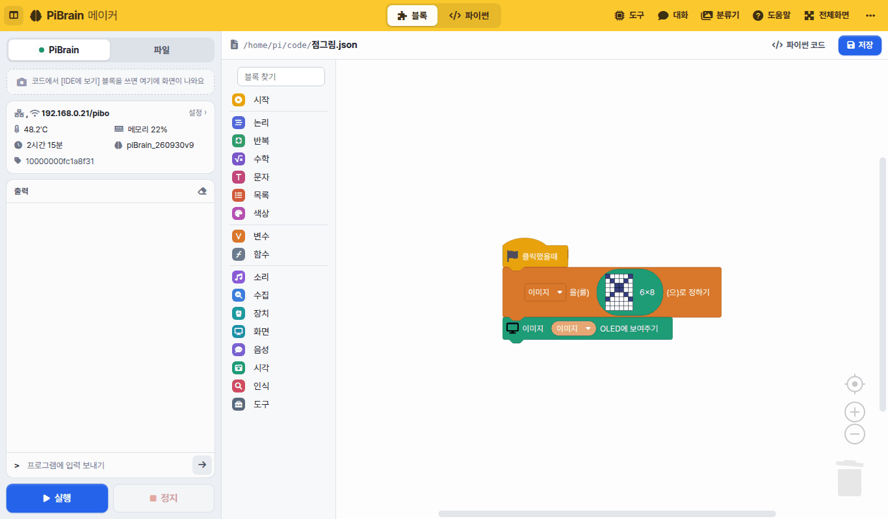
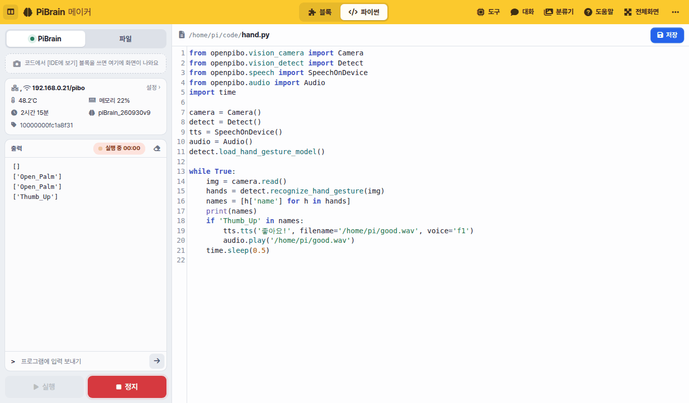
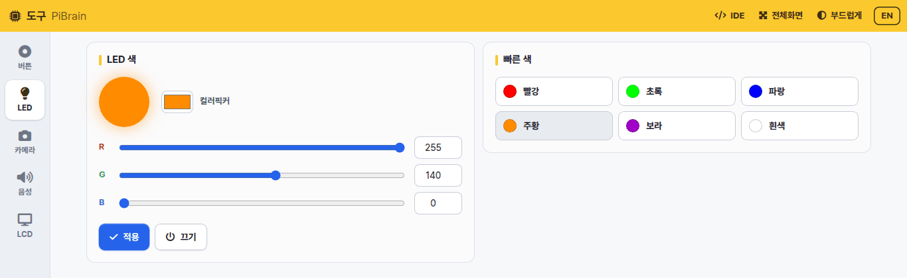
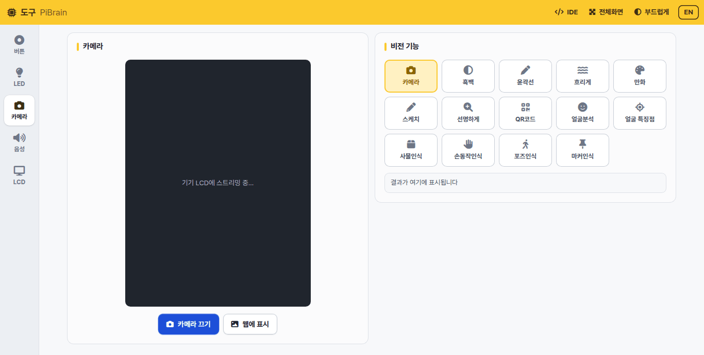
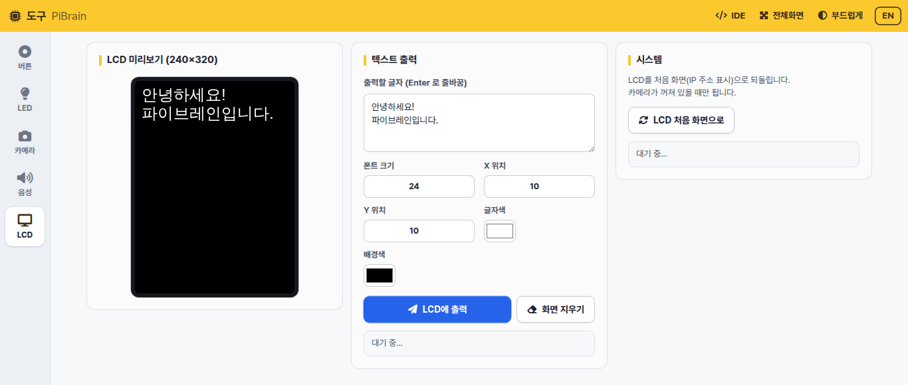
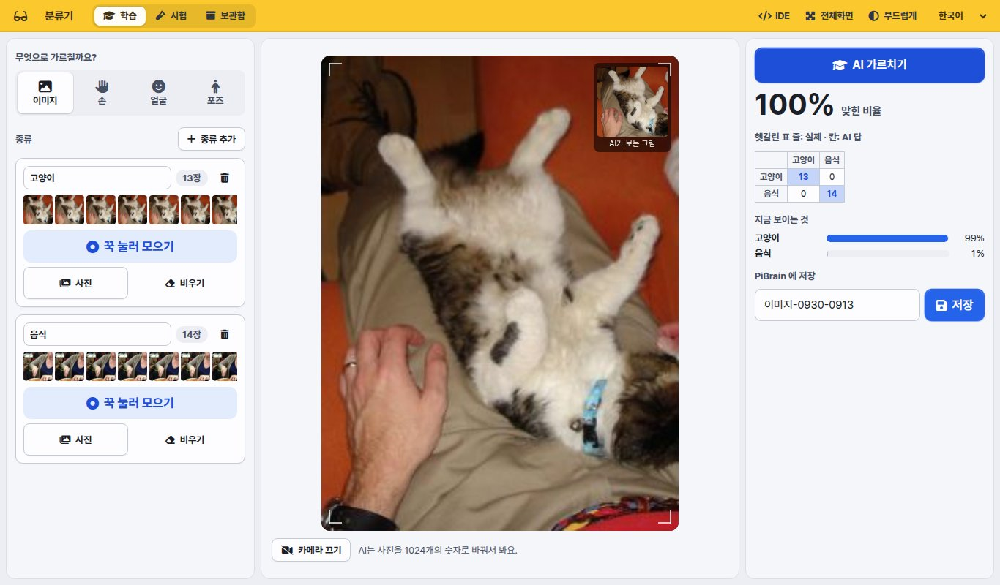

PiBrain 메이커¶
PiBrain 메이커는 브라우저로 여는 PiBrain 개발 환경입니다. 태블릿·노트북이 PiBrain 과 같은 WiFi 에 붙어 있으면 주소창에 PiBrain 의 IP 주소(LCD 첫 화면에 나옵니다)를 적어 엽니다. 설치할 것은 없습니다.
화면 |
하는 일 |
여는 곳 |
|---|---|---|
IDE |
블록·파이썬으로 프로그램을 만들고 실행합니다 |
|
도구 |
버튼·LED·카메라·목소리·LCD 를 코드 없이 바로 써 봅니다 |
IDE 위 [도구] |
대화 |
PiBrain 안의 언어 모델(LLM)과 글로 대화합니다 |
IDE 위 [대화] |
분류기 |
카메라로 예시를 모아 나만의 AI 를 가르칩니다 |
IDE 위 [분류기] |
도움말 |
지금 보고 있는 이 문서입니다 |
IDE 위 [도움말] |
참고
모든 기능은 PiBrain 안에서 돌아갑니다(목소리 만들기·대화·분류기 포함). 인터넷이 필요한 것은 블록 [수집] 분류(위키백과·날씨·뉴스)뿐입니다.
IDE¶

위 줄: [블록 | 파이썬] 으로 편집기를 바꿉니다. 오른쪽은 도구·대화·분류기·도움말·전체화면과 [⋯] 더보기 (화면 밝기 · 글자 크기 · 파이썬 편집기 테마 · 언어 · 초기화 · 전원 · 소스 코드와 라이선스)
왼쪽 패널: 아래의 [실행] [정지] 는 늘 보입니다.
[PiBrain] — 화면 출력(
IDE에 보여주기블록으로 보낸 그림), 상태(WiFi·온도·메모리·켜진 시간·버전), 실행 출력, 프로그램에 입력 보내기[파일] — 파일 목록, 새 파일·새 폴더·올리기, 사진·소리 미리보기
블록: 왼쪽 분류에서 블록을 끌어다 놓습니다. 맨 위 블록 찾기 에 ‘소리’·’얼굴’ 처럼 적으면 해당 블록이 나옵니다. [파이썬 코드] 를 누르면 블록이 만든 파이썬 코드를 볼 수 있습니다. 블록 목록은 왼쪽 BLOCK 을 보세요.

파이썬:
openpibo패키지로 PiBrain 의 기능을 씁니다.print는 왼쪽 [출력] 에,input은 [입력] 칸으로 받습니다. API 는 왼쪽 PYTHON 을 보세요실행한 프로그램은 PiBrain 안에서 돕니다. 멈추려면 [정지] 를 누릅니다
도구¶
PiBrain 의 기능을 하나씩 코드 없이 써 봅니다. 왼쪽 메뉴에서 [버튼] [LED] [카메라] [음성] [LCD] 를 고릅니다.
버튼: 버튼 4개가 눌렸는지 실시간으로 보여 줍니다

LED: 색을 골라 [적용] 하면 LED 가 그 색으로 켜집니다

카메라: [카메라 켜기] 를 누르면 카메라 화면이 PiBrain LCD 에 나옵니다. 비전 기능(흑백·윤곽선·만화·QR코드·얼굴분석· 사물인식·손동작인식·포즈인식·마커인식 등)을 누르면 LCD 화면에 바로 적용되고, 결과는 오른쪽 아래에 글자로 나옵니다. [웹에 표시] 를 누르면 지금 화면을 브라우저에서도 봅니다
음성: 목소리 10가지(남성 1~5, 여성 1~5) 중에서 골라 글자를 말하게 합니다. 한국어·영어는 자동으로 알아봅니다

LCD: 글자·크기·위치·색을 정해 LCD(240×320)에 띄웁니다. [LCD 처음 화면으로] 는 IP 주소가 나오는 첫 화면으로 되돌립니다
분류기¶

카메라로 예시를 모아 AI 에게 ‘이건 고양이, 이건 음식’ 처럼 가르칩니다. PiBrain 카메라는 세로(3:4)라 화면도 세로로 나옵니다.
무엇으로 가르칠까요? — 이미지(사진 전체) · 손(손 모양) · 얼굴(표정) · 포즈(몸 자세) 중에서 고릅니다
종류 마다 이름을 적고 [꾹 눌러 모으기] 를 누르고 있는 동안 예시가 모입니다. [사진] 으로 파일을 올려도 됩니다
[AI 가르치기] — 태블릿·노트북 브라우저에서 몇 초 만에 배웁니다. 맞힌 비율·헷갈린 표·지금 보이는 것의 점수가 나옵니다
[저장] — PiBrain 의
/home/pi/mymodel/<모델 이름>에 저장됩니다IDE 에서 블록
분류기 모델 [mymodel] (모델 이름) 불러오기→분류기 모델로 (이미지) 분류하기로 씁니다
[시험] 탭에서 저장한 모델을 다시 써 보고, [보관함] 에서 시험·이어서 배우기·이름 바꾸기·내려받기(zip)·삭제를 합니다.
팁
분류기는 처음 열 때 AI 파일(약 10MB)을 받습니다. 수업 전에 태블릿마다 한 번씩 열어 두면 수업 중에는 바로 뜹니다.
대화¶
PiBrain 안에서 도는 언어 모델(LLM)과 글로 대화합니다. 블록 [음성] 의 대화 서버 시작하기 · … 대화하기 로
프로그램에서도 씁니다. 모델을 올리는 데 시간이 걸려서 처음 열면 준비될 때까지 기다리는 화면이 먼저 나옵니다.
참고
도구·대화·분류기는 한 번에 하나만 켜집니다. 하나를 열면 나머지는 꺼지고, IDE 에서 프로그램을 실행해도 꺼집니다 (카메라·스피커·메모리를 나눠 쓰기 때문입니다). 꺼진 화면에는 [다시 켜기] 가 나옵니다.